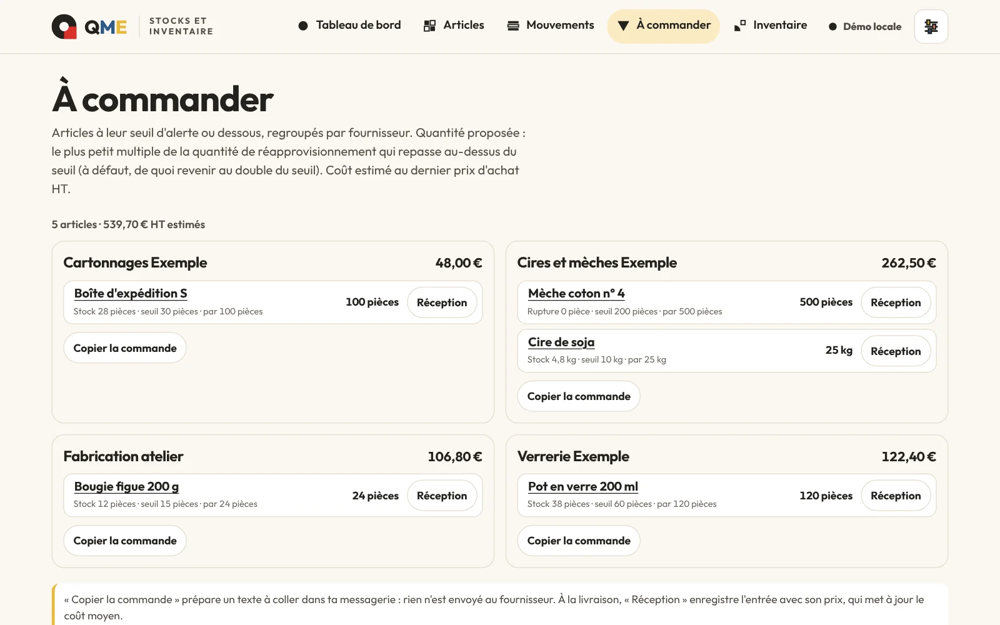

AFTER · FRENCH INTERFACE · SAMPLE DATA

The tool opens on
what is missing.
5 alerts.
1 out of stock, 4 below the minimum.
€540 to reorder.
€101 of stock asleep.
Small shops, workshops
Out of stock?
A customer
tells you first.
Here is why, and the fix.
BEFORE · THE SPREADSHEET
Numbers.
No warning.
Nobody sees the 0
until it is too late.
AFTER · FRENCH INTERFACE · SAMPLE DATA
The tool opens on
what is missing.
5 alerts.
1 out of stock, 4 below the minimum.
€540 to reorder.
€101 of stock asleep.
FRENCH INTERFACE · SAMPLE DATA

Then the order list,
by supplier.
5 items, 4 suppliers.
One click to copy each order.
Want one built
for your stock?
Built in French. Custom tools for small businesses.
qm-engineering.fr/x